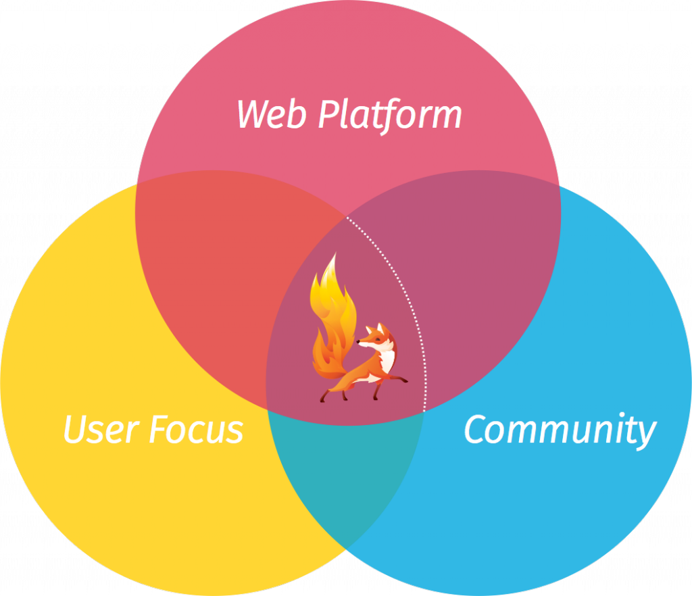

以推動網路、平等、開放為宗旨的 Mozilla，揭示 Firefox OS 發展藍圖。Mozilla 強調，Firefox OS 為實現其行動策略的重要關鍵，目前已展開包含 Ignite、Firefox OS 2.5 等新開發計畫，並積極發掘物聯網 (Internet of Things，IoT) 的發展機會。此外，Mozilla 台灣分公司仍持續肩負 Firefox OS 開發重任，扮演 Mozilla 永續維護 Open Web 的重要角色。
除了行動版 Firefox (Firefox for Android) 及其他規劃中的方案之外，Firefox OS 實為 Mozilla 行動策略的重要關鍵。Mozilla 相信：未來若要有健康的行動生態系統，勢必要針對單一供應商的專屬平台，提出開放且獨立的替代方案。這也是 Mozilla 推動開放、創新、充滿機會的線上生活之核心使命。
Mozilla 作為開放源碼專案，發展途徑不同於其他科技公司專案，大多數的工作與規劃均可供大眾檢視，在此向大家簡單報告 Firefox OS 下一階段的規劃。
Ignite 計畫
Mozilla 在今年稍早宣佈 Firefox OS 正邁向下一個階段，也就是專注於核心產品的使用經驗。除了確保 Firefox OS 清楚明瞭、簡單易用、時尚不落俗套之外，也要透過高擴充性及聰穎設計來兼顧強大功能，讓使用者更能掌握自己的行動連網經驗。
針對下一代 Firefox OS， Mozilla 的目標是打造更強大、更一致的新一代產品經驗與開發者平台，期待能確實體現 Web 的最佳優勢而彰顯 Mozilla 價值。
為了達到上述目標，Mozilla 將整合三大關鍵要素：

- 使用者為核心： 透過使用者導向的設計、研究、產品週期， 確實提供深受大家喜愛的使用經驗。
- Web 平台 ：要將更多 Mozilla 與 Open Web 的東西帶給大家，而不侷限於 Web 技術及其打造的相關產品。
- 社群 ：整合並全力協助由開發者、設計師，還有更多專業人士所組成的全球社群，一同打造 Web 的未來。
根據 Mozilla 心中的願景，我們將以開放源碼的 Firefox OS 單一核心為導向，採取新的「每六個月釋出一主要版本」開發模式。
每一主要版本，均將提供更完善的平台與使用者價值。只要使用者有意解鎖 Android 手機，或在 Android 上安裝「B2GDroid」App 以執行 Firefox OS，都能獲得最新體驗、協助測試新功能，更能為整個專案做出貢獻。若合作夥伴 (如 OEM 與營運商) 願意根據這些主要版本打造並銷售 Firefox OS 裝置，Mozilla 也將全力提供支援。
Firefox OS 2.5
Firefox OS 下一主要版本已排定將於今年 11 月釋出。你可從這裡了解目前規劃。
Firefox OS 2.5 將是最安全、最高可自訂性、最富含當地特色的版本，並將強化 Firefox OS 的使用經驗。除了隱私、個人化、當地內容等功能之外，我們也將於行動平台上實作桌面版的「View Source」功能 (附註：我們仍在評估並設計最後的功能) 並修正安全模型，向開發者揭露更多新的行動 Web API。另將提供如同 Firefox 的擴充元件機制，以擴充至使用者介面並新增手機功能。
新產品開發
我們另將逐步增加與重要夥伴在新產品開發上的合作程度、以最近 Firefox OS智慧電視與智慧功能性手機的消息為基礎，更會主動發掘 IoT 與其他連網裝置的機會。
此外，Mozilla 台灣分公司仍將持續扮演 Firefox OS 開發的關鍵角色，也是 Mozilla 永續維護 Open Web 的重要環節。致力為廣大使用者提供更強大的使用者經驗與開發者平台，以確實體現 Web 的最佳優勢並彰顯 Mozilla 價值。
敬請期待更多後續資訊。